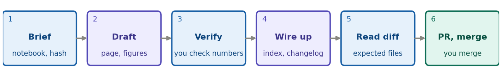

The agent does the mechanical work. You own every number,
every reading and every conclusion. Start it in the
NSDF-Data folder and it reads CLAUDE.md and
AGENTS.md, so it already knows the branch and pull request
rules. This sheet pairs with the developer sheet, creating
a note. Students use guide
5.

Blue: you. Purple: the agent. Teal: GitHub. Every hand-over is a point where you check its work.
Before you start:
git switch develop && git pull, then a clean
git status on a feature/note-NN-short-name
branch. The notebook is run and committed; you have its short hash.
A starting brief (fill in the brackets):
Write note
[NN]from[notebook], committed at[hash]. Copy the structure ofdocs/notes/note-02a-bstd-vs-time.html. Save the figures from the executed notebook intodocs/notes/img/. Pin every notebook andpython/link to the hash and verify each withgit cat-file -e. Add the index row, newest first, and a line under[Unreleased]inCHANGELOG.md. Every number must come from the notebook output: list any number you cannot find there. Leave the Reading and Next steps sections for me. Show me the diff and stop; do not commit or push.
The agent may draft the page from the newest note,
extract figures, pin and verify links, add the index row and the
changelog line, run python -m pytest -q, and, once you say
so, commit with a Co-Authored-By: trailer and open the PR
with gh pr create --base develop.
The agent must never invent, round or “fix” a
number; write the Reading or the conclusion; edit a
Complete note, another note, or their figures; run
07221203_2025_dump1_noise.ipynb; commit data
(.bin files, the idx folder); push to
master or develop; or merge a pull
request. These are the rules in AGENTS.md.
Your checks, before you let it commit
When it goes wrong. It says a number is checked but
you cannot find it: ask for the line of output it used, and if it has
none, the number is wrong. It turns your sentence into a different
claim: revert that sentence and say so. It wants to edit a Complete note
or generated files: refuse. A check keeps failing: paste the message,
not a summary. Then push the branch, let the checks run, and merge the
PR yourself. For a student note, the agent can run
python tools/build_notes.py check and report, but you give
the S-number and merge.